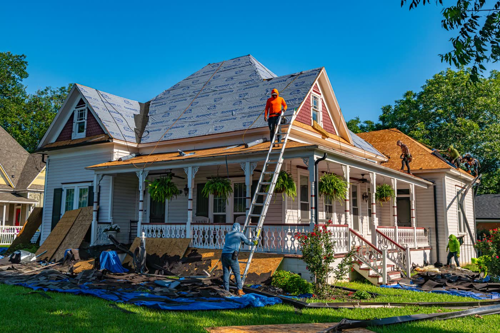
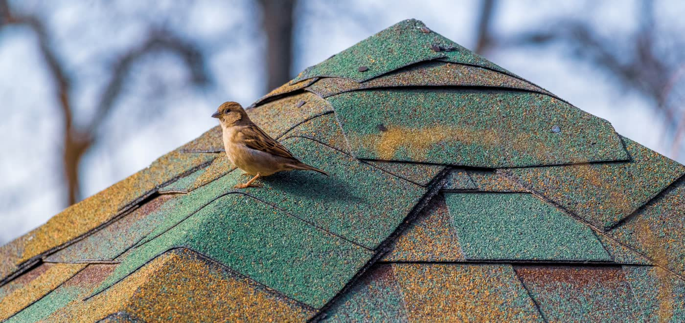
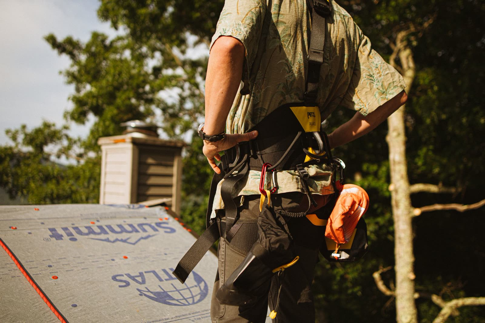

Expert roofing for homes and businesses
North Texas has trusted Jackson Roofing since 2000. Repairs, replacements, storm and hail damage, and free inspections, done with certified installers and premium materials.
Roofing for every North Texas home and business
From a single storm repair to a full replacement, one call covers it. Every job starts with a free inspection and an honest quote, and ends with a roof built to last. See every roofing service we offer.

Roof Repair
Leaks, missing shingles, flashing and small storm damage, fixed right so a minor problem stays minor. We find the source, not just the symptom.
Roof repair details →Roof Replacement
When a roof has reached the end of its life, we replace it with premium materials and certified installers, and leave the site clean.
Roof replacement details →
Storm & Hail Damage
North Texas hail is hard on roofs. We assess the damage, document it for your claim, and restore your roof after the storm.
Storm & hail damage details →
Free Roof Inspection
Not sure where you stand? Book a free, no-obligation inspection. We look it over, explain what we find, and give you a straight answer.
Free inspection details →Commercial Roofing
Roofing for North Texas businesses, from repairs to full systems, planned around keeping your doors open and your operation running.
Commercial roofing details →The roofer North Texas has trusted since 2000
We built Jackson Roofing on quality workmanship and personalized care, the kind that turns clients into friends. Meet the team behind Jackson Roofing.
High-quality work
Certified installers and premium materials on every roof, so the job is done right the first time.
Fully insured
Our work is backed by guarantees and coverage, so you are protected from the first nail to the final cleanup.
Free estimates
Every estimate is free and every inspection is no-obligation. You get a clear picture and a straight price before you decide.
Insurance help
Storm claim ahead of you? We assist with the process, documenting the damage and coordinating with your carrier.
Top service
Efficient, cost-effective work with quality checks along the way. We treat your home like it is our own.
Meet the owner
"Since 2000 we have built Jackson Roofing one roof at a time, on quality workmanship and treating people right. We want every client to walk away a friend, not just a job we finished."
Chris Jackson
Owner, Jackson Roofing
Straight talk from North Texas clients
Real reviews from Jackson Roofing customers.
"Jackson Roofing did our roof and seven years later it still looks great. They fixed the leak, and the cleanup afterward was excellent."
"The owner was personally involved and invested in the project. The team was quality and responsive from start to finish."
"Professional and prompt with responses. They made the whole thing stress-free from start to finish."
"Professional, coordinated with our insurance, and the quality of the follow-up service was excellent."
Quality workmanship, personalized care
Since 2000, Chris Jackson has led Jackson Roofing on a simple idea: do the work well and treat people right. When you call, you get certified installers, premium materials, and a company that turns clients into friends through the details it gets right.
Meet the TeamProudly serving North Texas
Based in the Plano area, roofing homes and businesses across North Texas.
Ready for a roof you can trust?
Book a free, no-obligation roof inspection and get a straight answer from a company North Texas has trusted since 2000.
Roofing FAQs
What areas does Jackson Roofing serve?
We serve homeowners and businesses across North Texas from our base in the Plano area, and have since 2000.
Do you offer free roof inspections?
Yes. Every roof inspection is free and no-obligation. We look over your roof, explain what we find, and give you a straight quote before any work begins.
Does Jackson Roofing help with insurance claims?
Yes. We assist with the insurance process for storm and hail damage, helping document the damage and coordinate with your carrier.
How do I know if I need a repair or a full replacement?
It depends on the roof's age and the extent of the damage. Our guide to the signs you need a new roof walks through it, and a free inspection settles it for certain.
Do you work on both homes and businesses?
Yes. We handle residential repair, replacement and inspections as well as commercial roofing for North Texas businesses.
Request your free roof inspection
Tell us about your roof and we will get back to you to set up a free, no-obligation inspection.